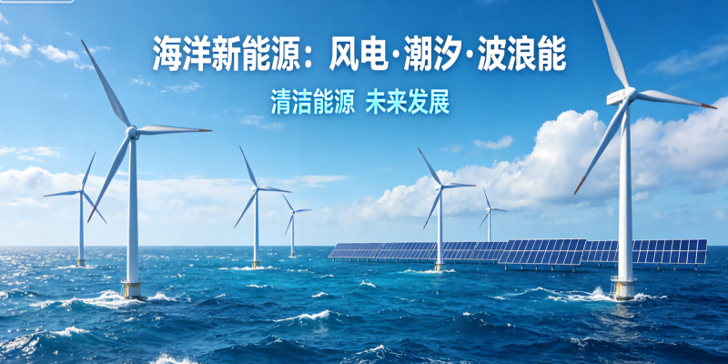
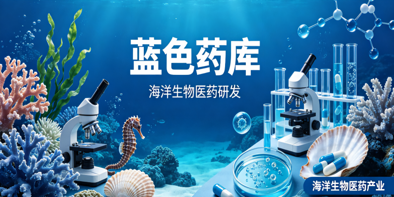
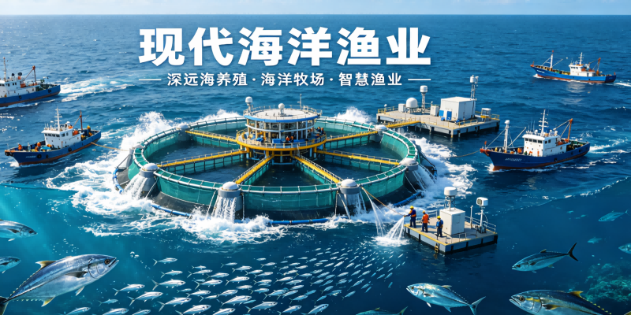
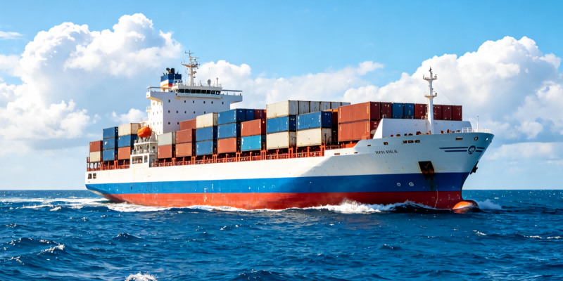
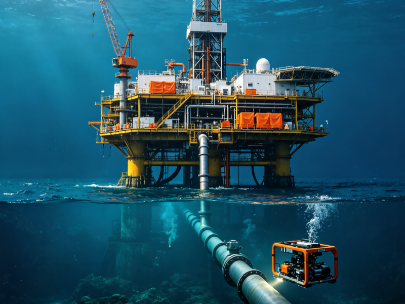
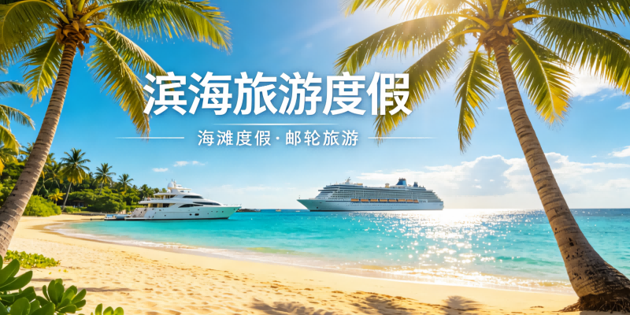

蓝色经济是以海洋资源为基础的新兴经济形态，涵盖六大核心产业领域。随着海洋强国战略的深入推进，海洋新兴产业正成为国家经济发展的新引擎，为青年人才提供了广阔的职业发展空间。

海洋新能源是指利用海洋中蕴藏的动能、势能和热能等可再生能源进行发电及综合利用的产业，主要包括潮汐能、波浪能、海流能、温差能和盐差能等。该产业具有储量巨大、清洁低碳、可再生且部分能源可精准预测等优势，是推动海洋经济高质量发展与实现"双碳"目标的关键力量。
我国海洋能年发电量理论潜力可达45万亿至130万亿千瓦时。国家明确提出力争到2030年海洋能装机规模达到40万千瓦的目标。截至2023年底，我国波浪能、潮流能、潮差能运行装机规模分别位居全球第一、第二和第三，正稳步迈向规模化利用与产业化发展阶段。

海洋生物医药是以海洋生物（包括其代谢产物）和矿物等为原料，生产药物、功能性食品及生物制品的产业。依托高压、高盐、低光照等特殊环境，海洋生物产生了结构新颖、活性独特的次生代谢产物，为抗肿瘤、抗感染等重大疾病提供了原创新药物质基础，是培育新质生产力、打造千亿级新兴产业的"蓝色引擎"。
2025年我国海洋生物医药产业增加值已达996亿元，自主研发的海洋药物品类约占全球上市总品类的28%。国家八部门联合印发指导意见，力争到2030年实现多项海洋创新药上市，产业增加值突破1300亿元。

海洋渔业是传统且核心的海洋支柱产业，主要包括海水养殖、海洋捕捞以及相关的专业辅助性活动和水产品加工业。随着产业升级，现代海洋渔业正从近海向深远海拓展，大力发展现代化海洋牧场、智能化养殖装备及水产品精深加工，是沿海地区乡村振兴和渔民增收的重要抓手。
我国是世界第一海水养殖大国和第一水产品出口大国。近年来，深远海养殖装备（如半潜式波浪能养殖平台）加速落地，推动渔业向数字化、生态化转型，产业链价值不断提升。

海洋交通运输业是指以船舶为主要工具从事海洋运输以及为海洋运输提供服务的活动，是全球贸易和国家经济运行的"大动脉"。该产业不仅包括传统的港口装卸、远洋航运和沿海运输，还涵盖了船舶代理、理货、海事法律与金融等高端航运服务业。
我国拥有世界级的港口群，货物吞吐量和集装箱吞吐量连续多年位居世界第一。未来，自动化码头建设、绿色航运走廊及跨境多式联运将成为行业增长的新引擎。

海洋油气业是指在海洋中进行原油和天然气勘探、开采、输送、加工及相关生产服务的活动。随着陆地常规油气资源的逐渐枯竭，海洋已成为全球油气增储上产的主阵地。该产业涉及复杂的深水工程技术、水下生产系统及海上平台建造，保障国家能源安全的同时探索可持续发展路径。
2025年全国海洋天然气产量比上年增长17.0%，海洋原油产量比上年增长3.4%，产业保持稳健增长态势。我国海域辽阔，深海油气资源潜力巨大，深水半潜式钻井平台、浮式生产储卸油装置等高端海工装备的国产化率将进一步提升。

滨海旅游业是以亲海为目的，开展的观光游览、休闲娱乐、度假住宿和体育运动等活动的综合性服务产业。它是海洋经济中第三产业的核心代表，具有资源消耗低、带动就业广、综合效益高的特点。随着消费升级，滨海旅游正从传统的"看海玩沙"向邮轮游艇、海岛康养、海洋文化体验等高附加值业态转变。
滨海旅游业长期稳居海洋经济第一大产业宝座。随着国民休闲需求的爆发式增长，高品质海岛游、定制化游艇出海等细分市场增速显著。各地正积极打造世界级滨海旅游目的地，推动文旅深度融合与数字化转型。